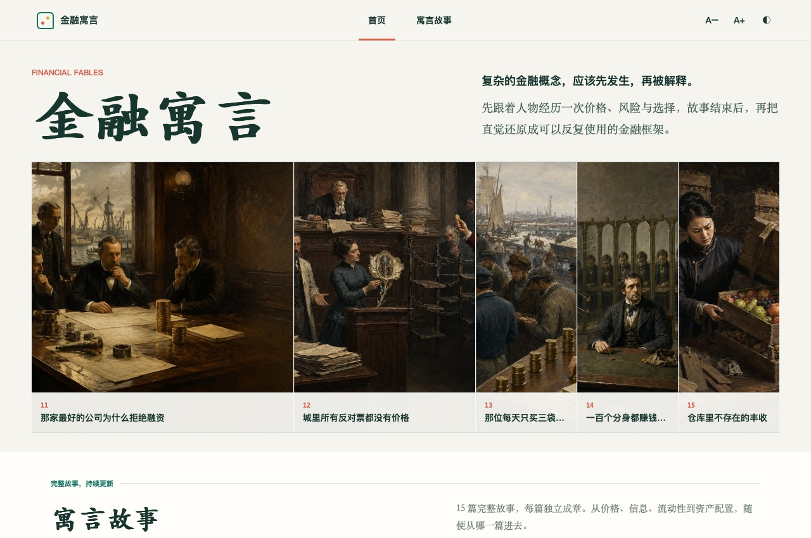

WEB APPLICATION · 2026
Financial Fables: an interactive reader
An interactive reading application that connects financial stories, concept explanations, and short transfer questions.

Reading task
Checking what a reader understood
The reading experience needed to preserve the story while giving the reader a way to connect it to a mechanism and test that understanding in a different situation.
DECISIONS
Interaction design
Follow the story with a transfer question
The sequence moves from story to concept explanation to a transfer question. Quiz feedback explains the reasoning behind an answer.
Persist reading status and preferences
I implemented hash routes and History API navigation, including browser back and forward. Local storage preserves the last story, completion status, type size, and theme preferences.
Serve smaller images on mobile
Responsive image sources provide smaller AVIF assets for mobile screens, with a JPEG fallback. The interface supports keyboard navigation and reduced-motion preferences.
IMPLEMENTATION
Browser implementation
The deployed site contains 15 stories. Route handling uses browser history and hash-based deep links. Local storage keeps reading status and display preferences on the reader’s device.
Semantic buttons, visible feedback, and an aria-live quiz explanation support interaction without making the reader infer hidden state.
Delivery measurements
Deployment and image delivery
The 15 mobile AVIF assets total 0.84 MB, compared with 3.99 MB for the corresponding desktop WebP set: approximately 79% fewer image bytes. The comparison measures asset size across different formats and dimensions; page-load performance remains to be measured.
The application is deployed with a complete reading, explanation, and quiz flow. The next evaluation step is to measure learning outcomes with readers.
Next: test with readers
Run a small reading study to compare comprehension before and after the transfer question. Measure actual load performance on mobile connections and test focus behavior with assistive technology.